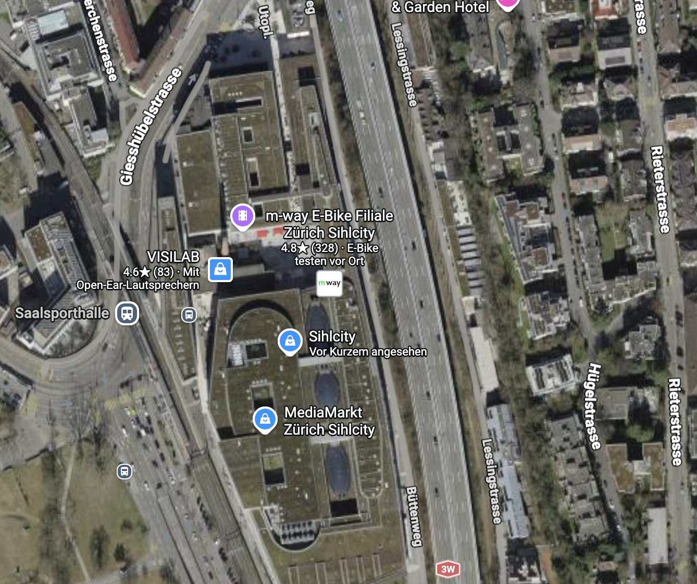
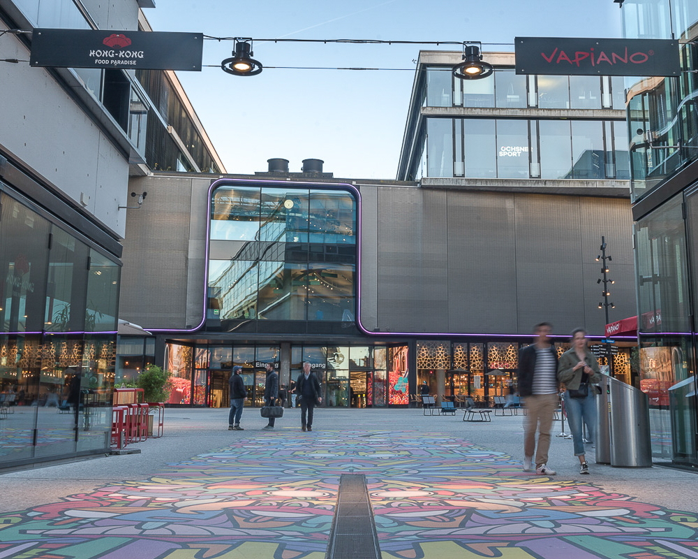
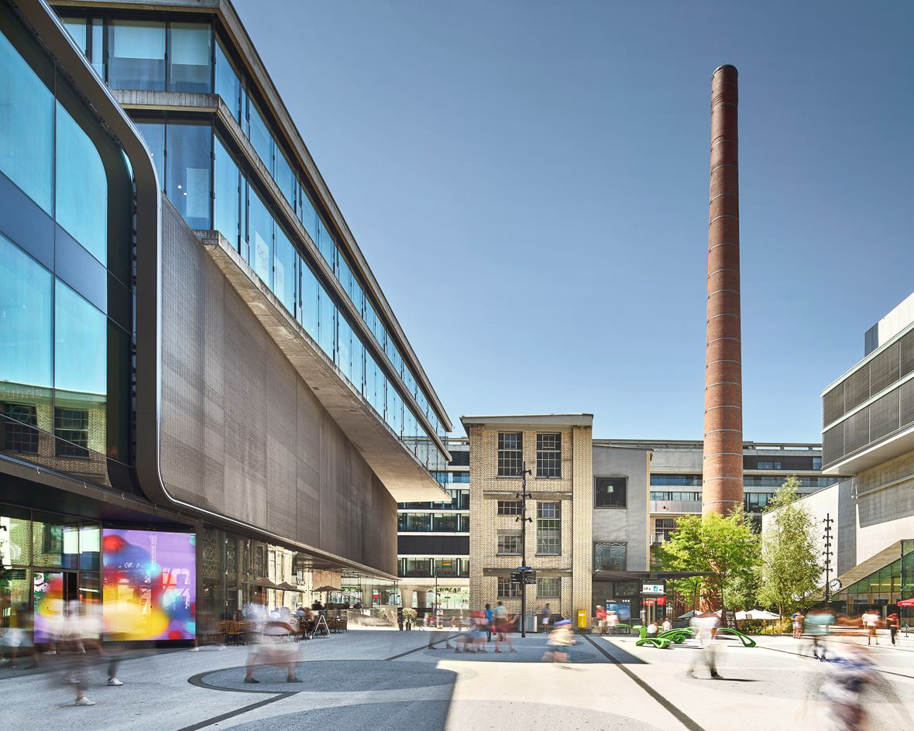
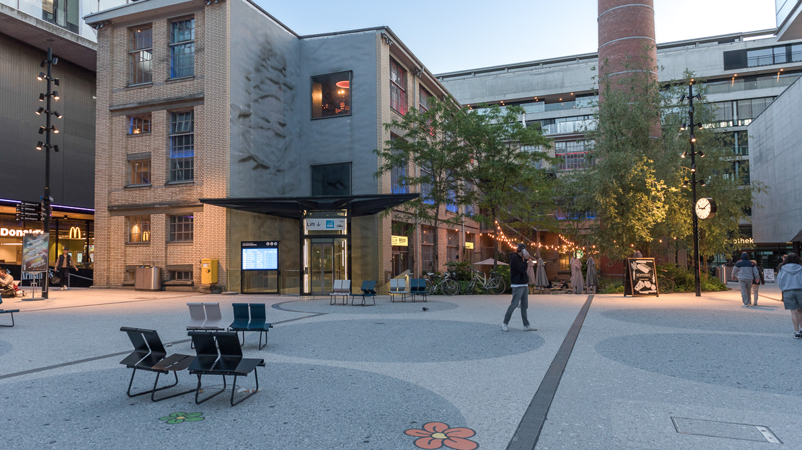
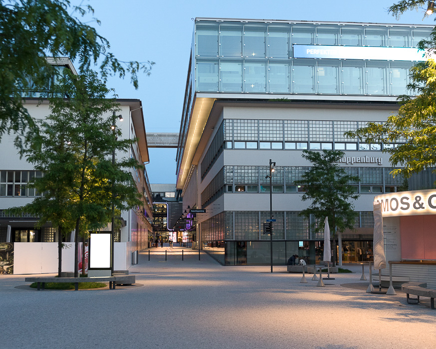

Plakat
Das Plakat
F200 Cityformat – zu finden an den fünf Standorten und im Stadtgebiet Zürich.
Der Eintritt ist kostenlos. Mit einer Anmeldung reservierst du dein Zeitfenster und erhältst den Link zum Livestream.
Wegweiser vor Ort führen dich vom Haupteingang durch das ganze Sihlcity-Areal.

" >
" >
" >
" >
" >F200 Cityformat – zu finden an den fünf Standorten und im Stadtgebiet Zürich.